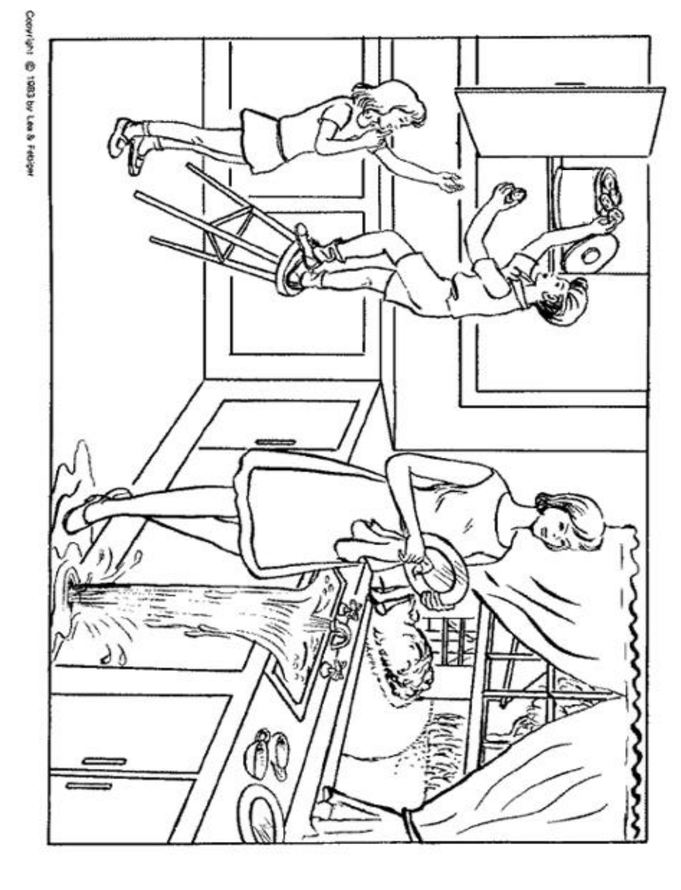

Realize os testes seguindo as orientações de forma exata, conforme padronizado pela NIHSS, para aumentar a confiabilidade e a reprodutibilidade:
Todos os itens da escala deverão ser pontuados.
Sempre preencha o item antes de seguir para o próximo.
Não retorne em itens anteriores para mudar pontuações já preenchidas.
Os itens deverão ser pontuados de forma independente do item anterior, com poucas exceções, que serão informadas quando for pertinente.
Caso algum dos itens seja "Não Testável" (NT), detalhe o motivo para tal. Apenas alguns dos itens da escala poderão ser NT.
Geralmente, é registrado o primeiro esforço do paciente, mesmo que os seguintes sejam melhores, para aumentar a reprodutibilidade da escala.
Pontue apenas o que o paciente faz, não o que julgar que ele é capaz de fazer.
Preencha cada item conforme o que for observado, mesmo que, inicialmente, aparente não fazer sentido.
Evite incentivar o paciente.
Inclua déficits provenientes de AVCs antigos na pontuação.
Caso algum item seja motivo de dúvida, evite atribuir pontuações extremas (mínimas ou máximas).
Ao final da escala, faça o somatório da pontuação e registre-a no formato padrão que será exibido.
1A. Nível de Consciência
Instruções de Realização:
Impressão geral durante a coleta da história, após resposta de duas ou três perguntas.
Se necessário, faça estímulo vigoroso ou até mesmo doloroso.
Escolha um valor mesmo em pacientes intubados, com barreiras de linguagem ou trauma facial.
0 = Acordado, mas responde corretamente.
1 = Sonolento, mas acorda com um pequeno estímulo, obedece, responde ou reage.
2 = Torporoso, acorda com estímulo forte, requer estimulação repetida ou dolorosa para realizar movimentos (não estereotipados).
3 = Comatoso; apenas respostas reflexas motoras ou autonômicas, ou sem qualquer tipo de resposta.
1B. Nível de Consciência: Perguntas
Instruções de Realização:
Pergunte a idade e o mês. As respostas devem ser exatas.
Pacientes intubados, com barreiras de linguagem, disartria grave, trauma facial, doença severa ou qualquer outro motivo não relacionado à afasia devem receber 1 ponto.
Pontue 2 em pacientes comatosos que pontuaram 3 em 1A.
Pontue 2 em pacientes afásicos que não compreenderam a pergunta.
0 = Responde ambas as perguntas corretamente.
1 = Responde apenas uma pergunta corretamente.
2 = Não responde nenhuma pergunta corretamente.
1C. Nível de Consciência: Comandos
Instruções de Realização:
O paciente deve ser solicitado a abrir e fechar os olhos e, em seguida, abrir e fechar a mão que não apresenta paralisia.
Substitua por outro comando de um único passo se as mãos não puderem ser utilizadas (ex.: "coloque a língua para fora").
Permitido repetir o comando uma vez e realizar gestos para fornecer estímulo visual, mas não encorajar o paciente.
Considere a tentativa da realização do comando, mesmo se a execução for incompleta.
Pontue apenas a primeira tentativa.
Critérios de Avaliação:
0 = Realiza ambas as tarefas corretamente.
1 = Realiza uma tarefa corretamente.
2 = Não realiza nenhuma tarefa corretamente.
2. Melhor Olhar Conjugado
Instruções de Realização:
Solicite que o paciente siga o seu dedo no sentido horizontal.
Teste o reflexo oculocefálico ou estabeleça contato visual se necessário.
Neste item, não é preciso considerar apenas a primeira resposta. Caso o paciente não obedeça ao comando na primeira tentativa, realize as manobras alternativas acima.
Os pacientes com trauma ou curativo ocular, cegueira pré-existente ou outro distúrbio de acuidade ou campo visual devem ser testados com movimentos reflexos.
Critérios de Avaliação:
0 = Normal.
1 = Paralisia parcial do olhar conjugado, desvio forçado vencido por manobras reflexas ou paresia de III, IV ou VI isolada.
2 = Desvio forçado ou paresia total do olhar conjugado não revertidos pela manobra oculocefálica.
3. Campos Visuais
Instruções de Realização:
Realize campimetria por confrontação (contar de dedos ou movimento dos dedos) ou ameaça visual.
Teste os quatro quadrantes em cada olho, de forma independente.
Após testar os olhos de forma independente, teste os campos visuais simultaneamente para avaliar a presença de extinção visual.
Se houver cegueira unilateral ou enucleação, os campos visuais no olho restante são avaliados.
Pontue 1 apenas se houver uma assimetria clara, incluindo quadrantanopsia.
Pacientes com campos visuais normais isoladamente, mas com extinção visual, recebem 1 ponto.
Pacientes com cegueira bilateral por qualquer causa devem receber 3 pontos.
Critérios de Avaliação:
0 = Sem déficits campimétricos.
1 = Hemianopsia parcial ou extinção visual.
2 = Hemianopsia completa.
3 = Hemianopsia bilateral; cegueira, incluindo cegueira cortical.
4. Paralisia Facial
Instruções de Realização:
Solicite que o paciente sorria ou mostre os dentes, feche os olhos e levante as sobrancelhas o máximo que puder
Em caso de pacientes afásicos, comatosos ou incapazes de obedecer a comandos, utilize estímulos dolorosos.
Remova barreiras físicas (ex: curativos) que possam dificultar a avaliação.
Critérios de Avaliação:
0 = Movimentos normais simétricos.
1 = Paralisia facial menor (apagamento do sulco nasolabial, assimetria no sorriso).
2 = Paralisia facial central evidente (paralisia facial inferior total ou quase total).
3 = Paralisia facial completa. (ausência de movimentos faciais das regiões superior e inferior de um lado da face).
5A. Força do Membro Superior Não Parético
Instruções de Realização:
Solicite ao paciente que estenda o membro com a palma da mão para baixo (em 90º se o paciente estiver sentado e em 45º se estiver deitado). Conte até 10 em voz alta e pontue se houver queda do membro antes disso.
Teste cada membro individualmente e sempre comece o teste pelo membro não parético.
É permitido ajudar o paciente colocando o membro na posição desejada.
Pacientes incapazes de sustentar contra a gravidade devem ser orientados a realizar qualquer tipo de movimento com o membro.
Caso o paciente tenha alguma limitação para extensão do membro não relacionada ao AVC, deverá receber uma pontuação da mesma maneira. O grau de limitação deverá ser julgado pelo profissional se está relacionado ao AVC ou não.
Marque "NT" apenas em caso de amputação do ombro ou do quadril ou incapacidade de movimentar o membro por algum motivo.
Pontue 4 em pacientes comatosos que pontuaram 3 em 1A.
Critérios de Avaliação:
0 = Sem queda; mantém o membro por 10 segundos.
1 = Queda parcial antes de completar 10 segundos; o membro não toca o leito.
2 = Algum esforço contra a gravidade; o membro toca o leito antes dos 10 segundos.
3 = Nenhum esforço contra a gravidade; o membro cai imediatamente, mas faz algum movimento.
4 = Nenhum movimento.
NT = Amputação ou anquilose.
5B. Força do Membro Superior Parético
Critérios de Avaliação:
0 = Sem queda; mantém o membro por 10 segundos.
1 = Queda parcial antes de completar 10 segundos; o membro não toca o leito.
2 = Algum esforço contra a gravidade; o membro toca o leito antes dos 10 segundos.
3 = Nenhum esforço contra a gravidade; o membro cai imediatamente, mas faz algum movimento.
4 = Nenhum movimento.
NT = Amputação ou anquilose.
6A. Força do Membro Inferior Não Parético
Instruções de Realização:
Com o paciente em decúbito dorsal, solicite que estenda o membro em 30º. Conte até 5 em voz alta e pontue se houver queda do membro antes disso. Seguir as mesmas orientações dadas para os membros superiores.
Critérios de Avaliação:
0 = Sem queda; mantém o membro por 5 segundos.
1 = Queda parcial antes de completar 5 segundos; o membro não toca o leito.
2 = Algum esforço contra a gravidade; o membro toca o leito antes dos 5 segundos.
3 = Nenhum esforço contra a gravidade; o membro cai imediatamente, mas faz algum movimento.
4 = Nenhum movimento.
NT = Amputação ou anquilose.
6B. Força do Membro Inferior Não Parético
Critérios de Avaliação:
0 = Sem queda; mantém o membro por 5 segundos.
1 = Queda parcial antes de completar 5 segundos; o membro não toca o leito.
2 = Algum esforço contra a gravidade; o membro toca o leito antes dos 5 segundos.
3 = Nenhum esforço contra a gravidade; o membro cai imediatamente, mas faz algum movimento.
4 = Nenhum movimento.
NT = Amputação ou anquilose.
7. Ataxia de Membros
Instruções de Realização:
Realize os testes de índex-nariz e calcanhar-joelho.
Peça que os movimentos sejam repetidos até que a pontuação seja clara.
O paciente deve estar com os olhos abertos.
Considere ataxia apenas se for desproporcional à fraqueza muscular.
No caso de cegueira, peça para tocar com o dedo no nariz a partir da posição de braço estendido.
Pontue 0 em pacientes que não compreendem comandos, estão em coma ou com o membro paralisado.
Pontue 0 apenas em caso de amputação do ombro ou do quadril ou incapacidade de movimentar o membro por algum motivo.
Critérios de Avaliação:
0 = Ausente.
1 = Presente em 1 membro.
2 = Presente em 2 membros (ambos membros superiores, ambos membros inferiores ou membro superior e membro inferior do mesmo lado).
NT = Amputação ou anquilose.
8. Sensibilidade
Instruções de Realização:
Avalie a sensibilidade ou mímica facial à pontada de um alfinete nos quatro membros (acima do punho, nos membros superiores, e do tornozelo, nos membros inferiores), na face ou no tronco.
Pergunte ao paciente se ele sente o estímulo e se há assimetria entre os lados. Os olhos do paciente não precisam estar fechados.
Em pacientes torporosos, comatosos ou afásicos, observe se há assimetria na resposta ao estímulo doloroso.
Só a perda de sensibilidade atribuída ao AVC deverá ser pontuada. (Ex.: não pontuar hipoestesia prévia secundária a polineuropatia).
Repita quantas vezes for necessário e em outros locais do corpo (face ou tronco) até obter uma resposta confiável.
Não testar extremidades (mãos e pés) para que não haja confusão com neuropatias.
Evitar ao máximo testar com roupas.
Pacientes torporosos ou afásicos, por dificuldade de caracterizar a intensidade da perda sensitiva, possivelmente são pontuados com 0 ou 1.
Pontue 2 em pacientes quadriplégicos que não respondem.
Pontue 2 em pacientes comatosos que pontuaram 3 em 1A.
Jamais marcar este item como NT.
Critérios de Avaliação:
0 = Normal; sem perda de sensibilidade.
1 = Perda de sensibilidade leve a moderada (o paciente sente menos a pontada ou há uma perda da sensibilidade dolorosa à picada, mas o ele a sente tocar).
2 = Perda da sensibilidade grave ou total (o paciente não sente que está sendo tocado) ou perda da sensibilidade bilateral.
9. Melhor Linguagem
Instruções de Realização:
Solicite que o paciente descreva uma figura, nomeie objetos e leia frases. As figuras, objetos e frases estão disponíveis abaixo.
A compreensão é julgada a partir destas respostas, assim como as respostas referentes às ordens dadas nos itens precedentes.
Se a perda visual interferir com os testes, peça ao doente para identificar objetos colocados na mão, repetir frases e produzir discurso.
O examinador deve escolher a pontuação no paciente com estupor ou pouco cooperativo.
A pontuação de 3 está reservada a doentes em mutismo e que não cumpram nenhuma ordem simples (mesmo que o mutismo não seja pela afasia).
O paciente intubado deve escrever as respostas.
Pontue 3 em pacientes comatosos que pontuaram 3 em 1A.
Critérios de Avaliação:
0 = Sem afasia; normal.
1 = Afasia leve a moderada. Perda óbvia de alguma fluência ou dificuldade de compreensão, sem limitação significativa das ideias expressas ou formas de expressão. Contudo, o discurso e/ou compreensão reduzidos dificultam ou impossibilitam a conversação sobre o material fornecido. Por exemplo, na conversa sobre o material fornecido, o examinador consegue identificar figuras ou itens da lista de nomeação a partir da resposta do paciente.
2 = Afasia grave; toda a comunicação é feita através de expressões fragmentadas; necessidade de interferência, questionamento e adivinhação por parte do examinador. A quantidade de informação que pode ser trocada é limitada; o examinador assume a maior parte da comunicação; o examinador não consegue identificar itens do material fornecido a partir da resposta do paciente.
3 = Mutismo ou afasia global; sem discurso ou compreensão verbal minimamente úteis.

Imagem 1: Figura para descrição.
Imagem 2: Lista de figuras para nomeação.
Imagem 3: Lista de frases para leitura.
10. Disartria
Instruções de Realização:
Se acreditar que o paciente consegue, solicite que leia ou repita as palavras da lista de palavras abaixo.
Se o paciente tem afasia grave, a clareza da articulação da fala espontânea pode ser pontuada.
Este item é considerado NT apenas se o doente estiver entubado ou tiver outras barreiras físicas que impeçam o discurso.
Não diga ao paciente a razão pela qual está a ser testado.
Pontue 1 para pacientes com discurso de difícil interpretação devido a outras causas, mesmo que o não estejam relacionadas ao AVC (ex.: edêntulos).
Pontue 2 em pacientes comatosos que pontuaram 3 em 1A.
Critérios de Avaliação:
0 = Normal.
1 = Disartria leve a moderada; doente com voz arrastada, mas, na pior das hipóteses, pode ser entendido com alguma dificuldade.
2 = Disartria grave; voz do doente é tão arrastada que chega a ser ininteligível, desproporcionalmente à disfasia, ou o paciente apresenta mutismo ou anartria.
NT = Impossível avaliar (ex.: intubação).
Imagem 4: Lista de palavras para repetição.
11. Extinção e Desatenção
Instruções de Realização:
Avalie presença de negligência visuoespacial ou anosognosia. Realize testes de estimulação simultânea em várias modalidades e pergunte se o paciente reconhece a própria mão.
A informação suficiente para a identificação de negligência pode ter sido obtida durante os testes anteriores.
Se o paciente tem afasia e/ou perda visual grave que impede o teste da estimulação visual dupla simultânea e os estímulos cutâneos são normais, a pontuação é normal.
Como a anormalidade só é pontuada se presente, o item nunca é considerado NT.
Pontue 2 em pacientes comatosos que pontuaram 3 em 1A.
Critérios de Avaliação:
0 = Nenhuma anormalidade.
1 = Desatenção em uma das modalidades (visual, tátil, auditiva, espacial ou pessoal) ou extinção à estimulação simultânea em uma das modalidades.
2 = Profunda hemidesatenção ou hemidesatenção para mais de uma modalidade; não reconhece a própria mão; se orienta apenas para um lado do espaço.
Soma Final das Pontuações
Pontuação Final:
0
Tabela de Evolução
Hora Início
Hora Final
Pontuação
Lista de Contraindicações à Trombólise
História clínica:
Tempo em que o paciente foi visto bem pela última vez (hora do ictus) maior do que 4,5 horas ou desconhecido.
NIHSS 0-5 e/ou déficit não incapacitante.
Regiões extensas e óbvias de hipoatenuação.
Regiões extensas e óbvias de hipoatenuação.
Obs.: Esses pacientes têm um prognóstico ruim e a hipodensidade evidente representa lesão irreversível. Todavia, não há evidência suficiente para identificar um limiar de gravidade ou extensão de hipoatenuação que afete a resposta ao tratamento com alteplase.
Evidência de hemorragia intracraniana aguda na TC.
TCE agudo com AVC isquêmico pós-traumático.
Sinais e sintomas consistentes com hemorragia subaracnoide.
Sinais e sintomas consistentes com endocardite infecciosa.
Caso suspeito ou confirmado de dissecção do arco aórtico.
Sangramento interno ativo ou diátese hemorrágica aguda.
História pregressa:
Neoplasia intracraniana intra-axial.
Histórico de hemorragia intracraniana.
AVC isquêmico nos últimos 3 meses.
TCE grave nos últimos 3 meses.
Cirurgia intracraniana/espinhal nos últimos 3 meses.
Malignidade gastrointestinal (GI).
Sangramento GI nos últimos 21 dias.
Medicamentos:
Uso de Heparina de baixo peso molecular (HBPM) em dose terapêutica nas últimas 24 horas.
Uso de inibidores de trombina (Dabigatrana) ou fator Xa (Rivaroxabana, Apixabana, Edoxabana) nas últimas 48 horas em pacientes com função renal normal.
Obs.: A infusão de alteplase IV pode ser aventada caso testes laboratoriais, como aPTT, INR ou tempo de trombina confirmem segurança.
Exames complementares:
Plaquetas <100.000/mm³, INR >1,7, aPTT >40 s, ou PT >15 s.
Obs.: Não deve-se aguardar resultados de exames laboratoriais para realização da alteplase IV, o dado é válido apenas se o paciente apresentar histórico de trombocitopenia ou de uso recente de anticoagulantes.
Em pacientes sem histórico de trombocitopenia, o tratamento pode ser iniciado antes da disponibilidade do resultado das plaquetas, mas deve ser interrompido se <100.000/mm³.
Em pacientes sem uso recente de anticoagulantes ou heparina, alteplase pode ser iniciada antes da disponibilidade de testes de coagulação, mas deve ser interrompida se INR >1,7 ou PT anormalmente elevado.
Lista de alertas:
Com consideração cuidadosa e avaliação de riscos e benefícios, os pacientes podem receber alteplase IV apesar da presença de um ou mais alertas.
Sinais neurológicos menores e isolados ou sintomas que melhoram rapidamente.
Glicemia sérica <50 mg/dL.
Obs.: Pacientes podem ser tratados com trombólise intravenosa se o nível de glicose for normalizado posteriormente.
Trauma grave ou cirurgia de grande porte nos últimos 14 dias.
Obs.: Os riscos potenciais de sangramento com tPA devido a lesões relacionadas ao trauma devem ser ponderados em relação aos benefícios previstos na redução dos déficits neurológicos relacionados ao AVC.
Histórico de sangramento gastrointestinal (antigo) ou geniturinário.
Crise convulsiva no início do AVC com comprometimentos neurológicos pós-ictais.
Obs.: A trombólise é razoável em pacientes com convulsão no início do AVC se houver evidências que sugiram que os comprometimentos residuais sejam secundários ao AVC isquêmico agudo e não a um fenômeno pós-ictal.
Gravidez.
Obs.: tPA pode ser administrado durante a gravidez quando os benefícios previstos de tratar um AVC moderado ou grave superarem os riscos previstos de aumento de sangramento uterino.
Punção arterial em local não compressível nos últimos sete dias.
Aneurisma intracraniano grande (≥10 mm), não tratado e não roto.
Malformação vascular intracraniana não tratada.
Pacientes que devem ser considerados elegíveis para trombólise:
Ictus entre 3 a 4,5 horas e idade >80 anos.
Ictus entre 3 a 4,5 horas e uso de Varfarina e com INR <1,7.
Ictus entre 3 a 4,5 horas e AVCi grave (NIHSS >25).
Ictus entre 3 a 4,5 horas e combinação de história prévia de AVCi e de diabetes mellitus.
Incapacidade ou demência previamente ao AVCi atual, apesar de as situações apresentarem menor melhora neurológica. Dessa forma, as decisões devem levar em consideração fatores relevantes, incluindo qualidade de vida, suporte social, local de residência, necessidade de um cuidador, preferências dos pacientes e familiares, e os objetivos do cuidado.
Pacientes que apresentam um AVC isquêmico moderado a grave e demonstram melhora precoce, mas permanecem com comprometimento moderado e potencialmente incapacitante, segundo o julgamento do examinador.
Pacientes com apresentação sugestiva ou confirmada de dissecção de vasos cervicais extracranianos, desde que não haja suspeita ou confirmação de dissecção de aorta torácica.
Submetidos à punção lombar nos últimos 7 dias.
Portadores de aneurismas <10mm.
Portadores de pequena quantidade de microssangramentos crônicos (1-10) em exame prévio.
Portadores de neoplasias intracranianas extra-axiais(ex.: meningiomas).
Pacientes que se apresentam concomitantemente com IAM e AVCi. Nestes casos, administrar alteplase na dose adequada para o AVCi.
Histórico recente de IAM (com ou sem supra do segmento ST).
Pacientes com AVCi após procedimentos endovasculares cerebrais ou cardíacos.
Portadores de neoplasia maligna com expectativa de vida >6 meses caso não haja outras contraindicações, como uso de anticoagulantes, cirurgias recentes e sangramento GI, entre outras.
Portadores de anemia falciforme.
Presença do sinal da artéria cerebral média hiperdensa na TC de crânio.
Pacientes com AVCi possivelmente secundários ao uso de drogas ilícitas.
No caso de "stroke mimics", o risco de transformação hemorrágica após trombólise é baixo. Portanto, iniciar alteplase é provavelmente recomendado em preferência a atrasar o tratamento para realizar testes diagnósticos adicionais.